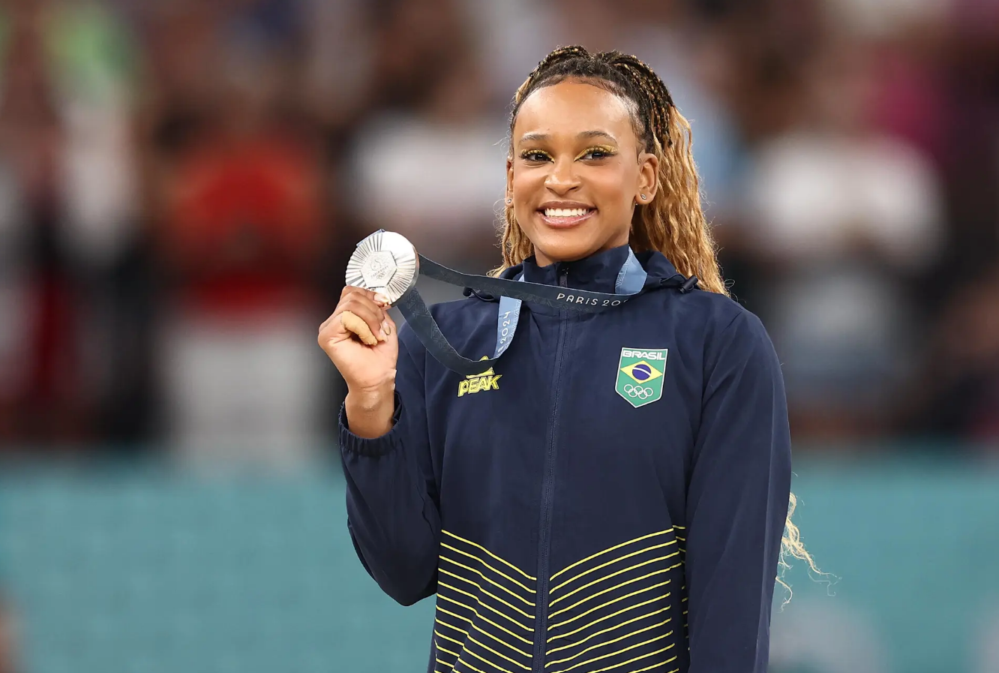

A atleta de ginástica artística conquistou a medalha de prata na disputa do salto, neste sábado, 03 de agosto, com 14.966 pontos.
Assista aos melhores momentos de Rebeca Andrade na final individual que fez dela a maior medalhista olímpica mulher do Brasil, acumulando um total de quatro medalhas.
Em uma entrevista após a competição, Rebeca compartilha suas impressões sobre a conquista da medalha de prata no individual geral de Ginástica Artística nos Jogos Olímpicos de Paris 2024.